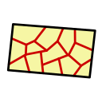

4. 地区と土地区画
4.1. 地区
地区は、都市をいくつかのエリアに分けるための重要な概念である。 需要や供給の計算、および商品の取引などはすべて地区単位でシミュレーションされるため、地区は経済シミュレーションの基礎となる単位である。
道路の面
地区への所属は、道路（パス）の面ごとに決まる。道路は始点から終点へ向かう向きに対して左右2つの面を持ち（left_zone_id / right_zone_id）、面ごとに1つの地区に所属する。
- 両面が同じ地区の道路は、その地区の内側の道路である。
- 面ごとに違う地区に所属する道路は、その2つの地区の境界になる。境界の道路は両方の地区の道路として数え、道路網のつながり・経路探索・地区の形のどれでも、両側の地区がこの道路でつながる。
- プレイヤーは面ごとに地区へ割り当てる（後述の地区の作成方法）。システムが新しい道路に地区を割り当てるときは両面を同じ地区にする。
以下で「地区の道路」と書くのは、どちらかの面がその地区の道路である。
パスのAPIの zone_id / zone_name は道路を1つの地区で表す値で、両面が同じ地区ならその地区、境界の道路と地区に属していない道路では 0 / null になる。
地区の作成方法
プレイヤーが地区を作成する際、直接指定するのはその地区に所属させる道路の面のみである。 プレイヤーは道路に囲まれたブロックの内側の面をまとめて、または道路の片側の面を選んで、新しい地区にしたり既存の地区へ取り込んだりする（地区編集パネル）。面に接道する土地区画は、面と一緒にその地区へ移る。 選んだ面は、割り当てた後の地区の道路が互いに繋がっている場合にだけ割り当てられる（飛び地の地区は作れない）。 別の地区から面を取り込んだ結果、取られた側の地区の道路網が分かれることは妨げられず、後述の分断として扱われる。 地区の道路がすべて別の地区へ移ると、空になった地区は削除される。
都市には常に1つ以上の地区が存在する。 ゲーム開始時に「初期地区」が1つ作成され、市庁舎（市政府）・中央銀行・輸出入拠点（支援物資搬入拠点）はこの初期地区に所属した状態で開始する。プレイヤーが最初に市庁舎を設置し、そこから都市を拡張していく起点となる地区である。
地区は道路の集合として定義されるが、道路が1本も所属していない地区も存在しうる（初期地区がまさにそれで、開始直後は道路を持たない）。都市に地区が初期地区の1つしか無く、まだどの道路もどの地区にも所属していない間は、プレイヤーが最初に敷設した道路がその初期地区に自動的に合流する。以降に敷いた道路は、接続先の既存地区を継承するか、どの地区にも接続しなければ新しい地区を自動作成する。ただし、既に十分大きくなった地区へは合流せず、あふれた道路群は新しい地区として芽吹く（後述の成長キャップ）。
自動管理地区と確定地区
すべての地区は auto_managed プロパティによって2つの状態のいずれかを取る。
| 状態 | auto_managed |
説明 |
|---|---|---|
| 自動管理地区 | 1 | システムが所属道路の組み替え（統合など）を自由に行える地区。システムが自動作成した地区はこの状態で始まる（初期地区を含む） |
| 確定地区 | 0 | プレイヤーが確定した地区。システムは所属道路が減る方向の組み替えを一切行わない。プレイヤーが作成した地区はこの状態で始まる |
プレイヤーが地区を明示的に編集（名前の変更、建築規制の変更、所属道路の変更）すると、その地区は自動的に確定地区へ昇格する。また、auto_managed を直接指定することで、編集を伴わずに地区を確定したり（ピン）、確定を解除して自動管理へ戻したりできる。
この2状態モデルの狙いは、地区を丁寧に設定しなくてもゲームを進められることにある。地区を触らないプレイヤーの都市では、道路網の成長に合わせてシステムが適度な大きさの地区を自動的に維持する。一方、プレイヤーが意図を持って作った地区の形状は、システムが勝手に変更することはない。
各状態の地区は次のように振る舞う。
- 自動管理地区は、互いに道路網で直接つながると1つの地区に自動統合される。ただし統合後が大きくなりすぎる場合は統合されず、隣り合う独立した地区として残る。
- 確定地区にも新しい道路は合流できる（地区は成長できる）。ただし所属道路が減る方向・組み替える方向の変更は、プレイヤーの操作以外では発生しない。
- どちらの地区にも成長キャップがあり、一定の規模を超えた地区へは新しい道路が合流しない。あふれた道路群は新しい自動管理地区として芽吹く。
地区の分断と復元
道路の取り壊しや、別の地区への道路の取り込みなどで地区内の道路網が分断された場合、地区は分割される（同じ地区の道路は互いに到達可能でなければならないため）。繋がりは同じ地区の道路同士で判定し、別の地区の道路を経由した繋がりは数えない。最大の道路群が元の地区として残り、切り離された道路群は新しい自動管理地区になる。このとき分離された地区は元の地区への系譜（parent_zone_id）を記憶しており、道路網が再びつながると元の地区へ自動的に吸収され、分断前の状態に復元される。再連結の判定には建設中の道路も含まれるため、工事による一時的な分断は工事の完了を待たずに解消される。
この復元は元の地区が確定地区であっても行われる。プレイヤーが確定した形状へ「戻す」方向の変更だからである。ただし、分離された側の地区をプレイヤーが編集して確定地区にした場合、その地区は独立した地区として扱われ、自動統合の対象から外れる。
地区は道路が1本も無くなっても即座に消えるわけではないが、経済活動の拠点を持たない空地区は自動削除の対象となる。ただし最後の1地区だけは、道路が無くても削除されない（市庁舎や初期エージェントの所属先を常に保証するため）。この結果、プレイヤーが全ての道路を撤去しても地区は必ず1つ残り、次に道路を敷けば再びその地区に合流する。
地区と土地区画・経済主体の所属関係
陸上の土地区画は原則として1本の接道（front_path_id）を持ち、接道のうち区画がある側の面の地区が、その土地区画の所属地区となる。区画がどちらの面にあるか（front_path_side）は、区画の辺のうち接道に最も近い辺の中点が、接道の中心線の左右どちらにあるかで決まる。境界の道路に面する区画は、道路の自分の側の地区に所属する。
また、経済主体（建物）は土地区画に立地するため、立地している土地区画の所属地区がその経済主体の所属地区となる。
このように、地区への所属関係は「道路の面 → 土地区画 → 経済主体」という階層的な伝播によって決定される。
土地区画は必ずいずれかの地区に所属する（地区未所属の区画は存在しない）。 都市には常に地区が1つ以上存在するため、接道の定まらない区画（道路が1本も無い状態で作った区画など）も、最も近い地区、それも解決できなければ任意の既存地区にフォールバックして所属する。例えば市庁舎を設置すると、その区画は初期地区に所属する。接道が後から定まれば、その道路の区画側の面の地区へ所属が更新される。
海上土地区画（PARCEL_WATER）は接道を持たない。 海上に建つのはインフラ財を専用網へ送り出すだけの施設であり、そこへ人も物資も陸路では出入りしないため、接道の探索そのものを行わず、front_path_id は常に未設定（接道候補の一覧も空）である。所属地区は、道路から地区を継承できた区画のうち最も近いものから引き継ぐ。
面している道路は、区画の作成・形状変更時に周囲の街路との距離から自動で決定されるが、プレイヤーは土地区画詳細パネルから接道を明示的に選び直すことができる。パネルには、その区画に面している街路（一定距離以内の街路）が候補として一覧表示され、その中から接道を選択して変更できる。候補に示す地区は、その街路を接道にしたときの区画の側の面の地区である。接道を変えると、上記の伝播によりその土地区画の所属地区が変わり、そこに立地する経済主体の所属地区（＝経済シミュレーションの単位）も変わる。この操作は区画の状態（空き地・建設予定・建物あり）を問わず行える。
地区の形状
地区はポリゴンという形状情報をプロパティとして持っているが、これはプレイヤーが直接指定するものではなく、後付けで計算される派生値である。 具体的には、ある地区に所属するすべての土地区画のポリゴン形状と、所属する道路の占有形状のうちその地区の面の帯を幾何学的に合算したものが、その地区のポリゴンとなる。面の帯は道路の中心線から片側の端までで、両面が所属する道路は全幅、境界の道路はその地区の側の半分になる。 道路の形状も含まれるため、道路を挟んだ両側の区画や道路沿いに並ぶ区画は道路を介してひと続きの形状になり、地区ポリゴンは地区の道路網に沿った1つの連結した形状になる。境界の道路の上では、2つの地区のポリゴンが中心線で接する。 所属する土地区画や道路が変化すれば、地区のポリゴンもそれに応じて変化する。 ただし海上土地区画は地区に所属していても地区ポリゴンの形状には寄与しない。地区の形は陸のまちなみで定義されるものであり、沖合の海上構造物まで地区が伸びたり、海側の形状に引きずられて陸側の輪郭が損なわれたりしないようにするためである。
この仕様により、地区同士が重複することはありえない。 なぜなら、道路の各面は必ず1つの地区にのみ所属し、その面に面する土地区画もまた1つの地区にのみ所属するためである。 ただし地区のポリゴンは外周だけを持ち、穴を表さない。他の地区に囲まれた地区があると、囲む側の地区のポリゴンはその地区も覆う。
地区の代表エージェント
地区を1つ作成するごとに、その地区を代表する3種類の仮想的な経済主体（代表エージェント）が必ず生成され、地区の削除時にまとめて削除される。これらは建物を持たず土地区画にも立地しない特殊な経済主体であり、それぞれ異なる役割を担う。いずれも作成された地区への所属（zone_id）が固定され、以降は変化しない。
| 代表エージェント | 役割 |
|---|---|
建設代理エージェント（VARIANT_ZONE_CONSTRUCTION） |
地区内の道路（パス）の新築・解体需要を肩代わりする。道路は経済主体ではなく市場に直接参加できないため、その建設資材の需要はこのエージェントを経由して調達される（12_建物 参照）。 |
修繕代理エージェント（VARIANT_ZONE_CONSTRUCTION_MAINTENANCE） |
地区内の道路の修繕需要を肩代わりする。 |
転居補助エージェント（VARIANT_ZONE_RELOCATE） |
市民や店舗が転居する際の一時的な入居先。新しく生まれた世帯や施設は、正式な建物へ入居先が決まるまでの間、いったんこの転居補助エージェントに仮入居した状態で都市に現れる。 |
道路の工事・修繕の需要は面ごとに半分ずつ、その面の地区の代理エージェントが受け持つ。両面が同じ地区の道路は全量がその地区の代理になり、境界の道路は両側の地区の代理が半分ずつ調達する。建設費の単価も、両側の地区の建設サービス財の価格を半分ずつ合わせたものになる。
建設代理エージェントと修繕代理エージェントは市政府の予算管理（建設予算・修繕予算）の対象となる（22_予算管理 参照）。転居補助エージェントは予算管理には関与せず、あくまで転居先が決まるまでの受け皿として機能する。
4.2. 土地区画の考え方
このゲームにおいては、都市内に存在するすべての建物は土地区画の上に立地する必要がある。 土地区画は任意の形状のポリゴンで表現され、都市の地面上に配置される。
土地区画の種類（parcel_type）
すべての土地区画は種類（parcel_type）を持つ。種類は区画の作成時にポリゴンの位置から自動的に判定される属性であり、プレイヤーが指定する操作は存在しない（区画の作成・更新APIに種別を渡す手段は無く、種別を変えるには区画を作り直すことになる）。判定の基準は海岸線（陸地ポリゴンの輪郭）との位置関係である。
| 土地区画種類 | 判定 |
|---|---|
沿岸土地区画（PARCEL_SHORE） |
区画の外周が海岸線の外周に接する（＝海に面している） |
水面（PARCEL_WATER） |
陸地のポリゴンに含まれない（＝海の上にある） |
通常土地区画（PARCEL_LAND） |
上記のいずれでもない（＝内陸） |
判定は海岸線のデータに基づくため、海岸線を持たない地形マップではすべての区画が通常土地区画になる。都市の範囲に収まらない区画も、海ではなく地形データの外側であるため通常土地区画として扱う。
海岸線は固定ではなく、埋立（造成）が完了すると埋立地の範囲が陸地ポリゴンに足されて広がる。区画の種類は区画を作った時点の海岸線で判定されるので、埋立地の上に作る区画は、海に面していれば沿岸土地区画、そうでなければ通常土地区画になる。すでにある区画の種類は、海岸線が広がっても変わらない。
区画の種類はポリゴンの形状を変えるものではなく、その区画に建てられる建物を物理的に制限する（4.5節、12_建物）。水面の区画は海上構造物（洋上風力発電所・洋上石油プラットフォームなど、インフラ財を専用網へ送り出す施設。26_インフラ網）の敷地であり、接道（4.1節・4.8節）・建設難易度（4.4.1節）・地区ポリゴンへの寄与（4.1節）の扱いが陸の区画とは異なる。
海上土地区画は民間建物の建設候補にならない（海面は民間に払い下げる土地ではないため）。このため海上土地区画には地価（land_price）が付かず、常に 0 のままである。海上構造物は市政府が公共施設として建設する。
4.3. 区画の作成と所有
- 所有権の管理
- 土地区画は常に何らかの2_経済主体が所有
- 区画は売買可能で、所有権は経済主体間で移転する
- 土地区画に建物が建っている場合、建物の所有権は土地区画の所有権と一致する
- 市政府が区画を利用するには、買収が必要
- 市政府(2_経済主体.md#22-経済主体の分類)ができること
- 市政府は未分割の土地を新たに区画として登録できる
- 市政府所有の区画は削除や分割が自由に可能
- 市政府が所有しない土地区画であっても、法的制限の変更は自由に行える
4.4. 区画の作成と分割方法
土地区画は以下の方法で作成・分割できる。
地点を指定した矩形区画の作成
- 未区画化の領域の中の1地点を選択
- 選択した地点を中心とする矩形の区画が1つ作成される
空き領域からの区画作成

- 未区画化の領域の中の1地点を選択してポリゴン化
- 連続する空き領域を埋める形状が生成される
パス沿いの区画作成
対象は接道可能な街路（PATH_STREET かつ path_master.frontage_allowed=true）に限る。歩道付き道路橋は歩行者の経路として利用できるが、沿道区画を生成する対象にはならない。この可否は全長生成・クリック地点周辺の生成・プレビューで共通である。
接道の自動選択・候補一覧・手動変更も同じ可否に従い、橋を除外する。道路を通常の街路から橋へ造り替えた場合も、周辺区画の接道を再判定する。通常の街路が見つからない区画は接道未解決となり、既存の地区所属フォールバックに従う。

- 既存の道路（パス）に沿って一定幅の区画を自動生成
- 道路の左右どちらかを選択し、幅と奥行きを指定して生成
- 奥行きは路面際から測るため、道路幅が変わっても指定した奥行きの区画になる
既存区画の分割
既存の区画を選択し、一定のパターンで既存区画を分割する。
| 外周分割 | 矩形分割 | ランダム分割 |
|---|---|---|
 |
 |
 |
既存区画のポリゴン形状変更
既存の区画を選択し、新たなポリゴンを設定する。既存の区画と重複しない範囲で設定可能。
4.4.1. 地形による建設難易度
すべての土地区画は、その場所の地形の起伏に応じた建設難易度を持つ。土地区画は作成時、およびポリゴン形状の変更時に、区画が覆う範囲の地形の平均勾配（terrain_slope、無次元）を算出して記録する。勾配は道路工事や造成で加工した後の現在の地形から約2m間隔で測り、地形が書き換わるとその範囲に掛かる区画の勾配も測り直す。造成で平らにした土地は平地として評価され、道路の法面や崖の縁が掛かる区画は急な斜面として評価される。埋立地の岸壁の天端（コンクリートで覆われた帯）の上は、天端の高さを地面として測る。岸壁の外の海は地面ではないので勾配に含めず、岸壁に接する平らな敷地（港など）は平地として評価される。急な斜面ほど造成・基礎工事の土工量が増えるため、この勾配が大きい区画ほど建物の建設・修繕・解体のコストと工期が大きくなる。
断崖絶壁のような急斜面では建設コストが著しく高くなるため、経済的に建物が成立せず（地価も低下し）、事実上建物が建たなくなる。市政府が建てる公共施設も同様に斜面では不利になる。
この難易度は建築規制のような明示的な禁止ではなく、あくまでコスト増を通じた経済的な抑制であるため、十分な地価・家賃が見込める場所であれば斜面にも建物は建ちうる。
海上土地区画の平均勾配は常に 0 であり、海底の起伏は建設難易度に反映されない。水深や海底地形の違いによる難しさは地形ではなく、海上構造物のバリアントごとの建設コスト係数（cost_ratio）として表現する。同様に、海上土地区画の基準標高（altitude）は海面を基準とした 0 で固定される。
4.5. 土地区画の建築規制
建築規制の設定
プレイヤーは土地区画ごとに建築規制を指定することができる。
- 建築可能な建物の種類(複数選択)
- 高さ
- 容積率
- 建ぺい率
土地区画に建築規制が設定されていない場合、土地区画が所属する地区の建築規制が適用される。
建築規制（allowed_bd_mask）は法的な制限であり、土地区画の種類（parcel_type）による物理的制約とは別物である。parcel_typeによる立地制約は建築規制にかかわらず常に適用される。どの種類の土地区画に建てられるかは建物種類（bd_type）ではなく建物バリアントごとに決まり、バリアントが要求する種類と土地区画の種類が一致する場合にのみ建設できる（12_建物参照）。
| 土地区画種類 | 建設可能な建物 |
|---|---|
通常土地区画（PARCEL_LAND） |
陸地を要求するバリアント（要求の指定がないバリアントを含む。大半の建物がこれにあたる） |
沿岸土地区画（PARCEL_SHORE） |
沿岸を要求するバリアント（港湾施設、石油パイプライン受入基地など） |
水面（PARCEL_WATER） |
水面を要求するバリアント（洋上風力発電所・洋上石油プラットフォームなどの海上構造物） |
埋立地（PARCEL_RECLAIMED） |
埋立地を要求するバリアント |
既存建物への影響
すでに建物が建っている土地の規制を変更した場合でも、既存の建物は影響を受けない。 建て替えの際に規制に適合する建物を建てる必要がある。
4.6. 横断パスのある区画（has_crossing_path）
すべての土地区画は、区画の直下または上空を物理的に存在するパスが横断しているかを示すフラグ has_crossing_path（0/1）を持つ。「横断」とみなされるのは以下の場合である。
- 浅い地下: 埋設インフラやトンネルなど、路面の絶対標高が地形標高より低く、かつ深さが大深度免除の閾値（都市パラメータ、既定20m）未満の区間が区画に重なる場合。それより深い大深度トンネルは土地利用に影響しないため横断とみなされない。
- 上空: 高架道路や送電線など、路面が地表より高い区間が区画に重なる場合（高さは問わない）。
このような横断パスは、市有区画上へのパス敷設免除（3_道路網参照）や、既存の地下パスの上への区画新規作成によって生じる。
海上土地区画ではこのフラグは立たない。海底ケーブルや海底パイプラインは海面下の海底を這うだけで、海面に建つ構造物の土地利用を妨げないためである。
フラグが立っている区画では:
- 民間建物はスポーンしない。 埋設物や高架との物理的な衝突を防ぐためであり、「空き地なのに建物が建たない」状態は意図した挙動である。
- 公共施設はプレイヤーの操作で建設できる。 ただし上空にパスがある場合、建物の高さが上空パスのクリアランス（路面と地表の間の高さ）未満である必要がある。
フラグはパスの着工・削除、区画の作成・形状変更のタイミングで自動的に更新される派生値であり、プレイヤーが直接変更することはできない。
4.7. 土地の立地倍率
すべての土地区画は、経済主体のサブカテゴリ（variant）ごとに立地倍率（agent_multiplier）を持つ。
立地倍率とは、ある種類の経済主体がその土地区画に立地した際の、売上や生産効率のブースト係数である。
例えば、スーパーの variant の立地倍率が 1.2 の土地区画にスーパーが立地すれば、そのスーパーは立地倍率 1.2 の恩恵を受ける。
立地倍率は経済主体ごとではなく土地区画ごとのプロパティである。
土地区画のプロパティ agent_multiplier に variant ごとの倍率が格納されており、
全土地区画 × 全 variant の組み合わせ分の倍率値が存在する。
初期値はすべて 1.0 であり、エポックごとのシミュレーションで更新される。
立地倍率の計算フェーズ
立地倍率は商品の種類（小売財・工業原料）ごとに異なる要素から計算される。
小売バリアントの立地倍率
小売財を供給するvariantの立地倍率は、交通量と集積効果に基づいて計算される。 - 交通量ボーナス: 面する道路の交通量に応じて加算される。交通量の多い場所ほど小売業の売上が向上する - 集積効果ボーナス: 近隣に同種または同グループの施設が集まっているほど加算される
工業原料バリアントの立地倍率
工業原料を供給するvariantの立地倍率は、集積効果と天然資源効率に基づいて計算される。 - 集積効果ボーナス: 小売と同様だが、交通量ボーナスは適用されない - 天然資源効率: 天然資源を必要とするvariantでは、資源残量率に基づく効率が乗算される（21_天然資源）。資源が存在しない区画では生産できない
立地倍率が経済主体に与える影響
計算された立地倍率は、各経済主体の attraction に取り込まれる。attraction は立地倍率と長期稼働ボーナス（知名度）から算出される「顧客から見た施設の魅力」の倍率である。設備投資の充実度は顧客の店選びに関係しないため attraction には含まれず、生産側の設備効率として別に扱われる（9_生産活動を参照）。
attraction の効果の受け方は、経済主体が供給する商品の種類によって異なる。
- 小売財を供給する経済主体- 商品市場でのスコア計算において、
attractionが高いほど需要者から選ばれやすくなる。つまり、魅力的な立地にある店舗ほど多くの顧客を集める。 - 工業原料を供給する経済主体- 生産実行時に
attractionが生産量に乗算される。つまり、同じ原材料と労働力を投入しても、立地倍率が高い場所ではより多くの製品を生産できる。ただし原材料の消費量は増えないため、実質的に原料効率が向上する。
共有建物バリアントの立地倍率
共有建物は直接的な立地ボーナスを受けず、建物に入居しうるテナントにとっての立地の良さから間接的に立地価値が評価される。テナントにとって立地倍率の高い場所にある建物ほど、建物自体の立地倍率も高くなる。
4.8. 接道距離とオープンスペース
バリアントは駐車場3001、駅前ロータリー3002、アスファルト面だけの舗装広場3003、舗装園路と植栽を持つ公園3004、複数階の床を駐車に充てる立体駐車場3005。このうち3001〜3004は通り抜け可能（passable）で、公園も区画全面を徒歩・自動車共通の通過可能領域とし、園路や樹木の配置は通行判定に使わない。立体駐車場は passable を持たず、敷地を通り抜けることはできない。描画は オープンスペースのメッシュ生成 を参照する。
このほか、造成の整地工事3006と埋立工事3007（造成）も同じカテゴリの一時的な主体である。完了すると稼働せずに区画ごと消えるので、passable を持たず通行路にならない。
接道距離（front_path_distance）
すべての土地区画は、接道（front_path_id）と同時に接道距離（front_path_distance、m）を派生値として持つ。区画の辺から接道道路の敷き端までの距離で、道路に接している区画では0になる。
道路と区画の間はグラフ化された交通網の外側（ラストマイル）であり、区画に出入りする人や物資はこの区間を道路外で移動しなければならない。道路沿いに停めた車から荷物を人手で運ぶような手間に相当するため、接道距離は1mあたり1分の到達時間ペナルティとして区画の地区内到達時間（automobile_local_route_time / pedestrian_local_route_time）に加算される（上限あり）。接道の解決距離（一定距離、既定100m）を超えて道路が無い区画は「接道なし」として上限値のペナルティを一律に受ける。
接道を持たない海上土地区画（4.1節）も同じ「接道なし」の扱いとなり、上限値のペナルティを常に受ける。海上構造物は市民の訪問も通勤も受けず、市場からの仕入れも行わないため、この到達時間は施設の成立に影響しない。
オープンスペースによる肩代わり
道路と区画の間に建物が何も無く、しかもその間が舗装されていれば、現実には車も人も容易に行き来できる。これをゲーム上で表現するのがオープンスペース（経済主体タイプ TYPE_OPEN_SPACE。駐車場・駅前ロータリー・舗装広場などのバリアント。2_経済主体）である。
- オープンスペースはプレイヤーが公共施設として土地区画に建設する建物であり、何も生産せず誰も雇わない。建設・修繕・解体・老朽化のライフサイクルは通常の建物と同じで、市場・雇用・利益評価には一切参加しない。
- 通り抜け可能なバリアント（
passable）のオープンスペースが稼働中（STATUS_ACTIVE）のとき、その土地区画は「通過可能領域」になる。 立体駐車場のようにpassableを持たないオープンスペースは、稼働中でも通過可能領域にならない。建設中・停止中・解体中・倒壊したオープンスペースは通れない（工事現場や閉鎖された駐車場を通り抜けて荷物は運べない）。 - 区画の接道距離は、通過可能領域を経由した実効距離で評価される。区画が通過可能領域に接し、その領域が道路に接していれば接道距離は0になり、ペナルティは消える。領域が途中までしか無ければ、領域までの隙間と領域から道路までの隙間の和が接道距離になる。
- 隣り合うオープンスペース区画同士はひと続きの領域として扱われるため、駐車場と広場を連ねて道路から遠い建物まで通行路を延ばせる。
- 接道の解決距離（100m）も実効距離で判定されるため、広い駅前広場の向こう側にある区画も、その広場に面する道路を接道として持てる（所属地区もその道路の地区になる）。土地区画詳細の接道候補一覧も同じ基準で列挙される。
- 実効距離は徒歩・自動車で共通である（駐車場も広場も車と人の両方が通れるものとして扱う）。
この仕組みは経路探索そのものには現れない。オープンスペースは交通網のノードにはならず、交通量も乗らない。変わるのは区画の接道距離という派生値だけであり、オープンスペースの稼働開始・停止・解体・削除や、周辺の区画・道路の変化に応じて周辺区画の接道が自動的に再解決される。
典型的な使い方は、駅舎や施設を設計ミスで道路から少し離して置いてしまった場合に、その間を駅前ロータリーや駐車場で埋めることである。逆に、草地のままの空き区画は舗装されていないので通行路にはならない。